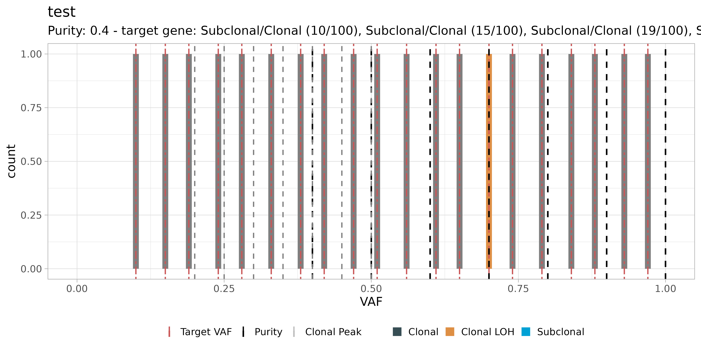

library(dplyr)
#>
#> Attaching package: 'dplyr'
#> The following objects are masked from 'package:stats':
#>
#> filter, lag
#> The following objects are masked from 'package:base':
#>
#> intersect, setdiff, setequal, union
library(TAPACLOTH)We work with the example TAPACLOTH data.
Exact read-counts based test
TAPACLOTH provides an exact test (with a p-value) to assess clonality and zygosity from read-count data.
This test is based on a model of the sequencing outcome following either a Binomial or a Beta-Binomial process, in which the number of reads with a variant represents the number of successes over a total number of trials corresponding to coverage.
Since a clonal variant within a diploid heterozygous tumour genome affects one out of two alleles of all the tumour cells, the success probability of the counting process corresponds to half of the tumour sample purity. Sub-clonal and clonal mutations with loss of heterozygosity are expected to have respectively smaller and larger success probabilities, respectively. Therefore, if we assume as null model clonality, and consider for every input mutation
- \(n_v\) reads with the variant at the locus;
- \(n_r\) reads with the reference at the locus;
- sample purity \(\pi\);
then the expected number of reads with the variant follows \[ X_B \sim Bin(\cdot \mid c, \pi/2) \] and therefore \[ P(X_B \leq x) = \sum_{k = 0}^x Bin(x \mid c, \pi/2). \]
The Beta-Binomial case simply follows \(P(X_{BB} \leq x) = \sum_{k = 0}^x \textit{Beta-Bin}(x \mid c, \pi/2, \rho)\) for some over-dipsersion \(\rho\). A Beta-Binomial distribution can be used to take into account the over-dispersion of the sequencing assay.
We can take an \(\alpha\)-level (e.g., \(10^{-3}\)) and invert the function to determine
\[ m^{\text{sub}} = \inf\left\{x\mid P(X \leq x) \leq \alpha\right\} \]
and
\[ m^{\text{loh}} = \inf\left\{x \mid P(X \leq x) > 1 - \alpha\right\} \, . \]
so to determine that:
- if \(n_v \leq m^{\text{(sub)}}\) then the mutation is likely subclonal;
- if \(n_v > m^{\text{(loh)}}\) then the mutation is likely clonal with loss of heterozygosity (LOH) associated;
In the latter case the mutation has also high multiplicity, meaning that there could be no wildtype alleles. For a tumour suppressor gene this might imply total inactivation.
Therefore the intuition is that a variant is classified as subclonal if \(n_v\) falls to the left of the confidence interval of the distribution, while it is clonal with LOH if it falls to the right, or heterozygous otherwise (i.e., inside the confidence interval).
Example
In the following example, the classification task is run using both the Binomial and Beta-Binomial models - do appreciate the difference across the width of the acceptance regions of each class.
The output contains a fit object that is basically the same input table with the additional column class_binom, plus the input parameters of the used test.
binomial_model = run_classifier(
x = data,
alpha_level = 1e-3,
model = "Binomial"
)
#>
#> ── TAPACLOTH Binomial clonality/Zygosity testing for sample test ───────────────
#> ℹ Computing null model distributions and p-values.
#> Warning in max(.): no non-missing arguments to max; returning -Inf
#> Warning in min(.): no non-missing arguments to min; returning Inf
#> Warning in max(.): no non-missing arguments to max; returning -Inf
#> Warning in min(.): no non-missing arguments to min; returning Inf
#> Warning in max(.): no non-missing arguments to max; returning -Inf
#> Warning in min(.): no non-missing arguments to min; returning Inf
#> Warning in max(.): no non-missing arguments to max; returning -Inf
#> Warning in min(.): no non-missing arguments to min; returning Inf
betabinomial_model = run_classifier(
x = data,
alpha_level = 1e-3,
model = "Beta-Binomial",
rho = 0.01
)
#>
#> ── TAPACLOTH Beta-Binomial clonality/Zygosity testing for sample test ──────────
#> ℹ Computing null model distributions and p-values.
print(binomial_model)
#> ── [ TAPACLOTH ] Test using Binomial model, with significance level 0.001 ─────
#> # A tibble: 4 × 9
#> sample gene nv dp VAF purity p_subclonal p_loh class_binom
#> <chr> <chr> <dbl> <dbl> <dbl> <dbl> <dbl> <dbl> <chr>
#> 1 test test gene 1 10 100 0.1 1 NA NA Clonal
#> 2 test test gene 2 50 100 0.5 1 NA NA Clonal
#> 3 test test gene 3 90 100 0.9 1 NA NA Clonal
#> 4 test target gene 120 200 0.6 1 NA NA Clonal
print(betabinomial_model)
#> ── [ TAPACLOTH ] Test using Beta-Binomial model, with overdispersion parameter
#> # A tibble: 4 × 9
#> sample gene nv dp VAF purity p_subclonal p_loh class_binom
#> <chr> <chr> <dbl> <dbl> <dbl> <dbl> <dbl> <dbl> <chr>
#> 1 test test gene 1 10 100 0.1 1 8.63e-10 1.00e+ 0 Subclonal
#> 2 test test gene 2 50 100 0.5 1 1.00e+ 0 6.29e- 1 Clonal
#> 3 test test gene 3 90 100 0.9 1 1.00e+ 0 2.20e-10 Clonal LOH
#> 4 test target gene 120 200 0.6 1 1.00e+ 0 9.37e- 2 ClonalThe test shows that at fixed \(\alpha\)-level, including over-dispersion results in a narrower confidence interval on \(n_v\), so that the null hypothesis of heterozygosity is more likely to be rejected, in favor of sub-clonality or LOH alternatives.
Approximate frequency-based test
TAPACLOTH also provides an approximate test that is useful when the number of reads with variant and coverage are unknown, and VAF and sample purity are the only available information.
This test is based on an adjustment of the observed VAF for the confounding sample purity, i.e., VAF/purity. Since a clonal variant within a diploid heterozygous tumour genome affects one out of two alleles of all the tumour cells, we expect its VAF/\(\pi\) ratio to be close to 0.5. Analogously, for sub-clonal and clonal mutations with loss of heterozygosity we expect the ratio to be close to 0 and 1, respectively.
If we assume that each of the \(N\) observed values of \(X=\text{VAF}/\pi\) for a target gene across the dataset has equal probability
\[ Pr(X_k) = \frac{1}{N} \]
and therefore
\[ Pr(X \leq X_k) = \sum\limits_{i=0}^k\frac{1}{N} \]
we can partition the distribution of the observed values into 3 subsets of nearly equal sizes, where the cut points are the terziles defined as
\[ q^{\text{sub}} = \sup\left\{x \in [x_1,\dots,x_N] \mid Pr(X\leq x)\leq \frac{1}{3}\right\} \]
\[ q^{\text{loh}} = \inf\left\{x \in [x_1,\dots,x_N] \mid Pr(X\leq x)\geq \frac{2}{3}\right\} \]
and determine that:
- if \(\text{VAF}/\pi \leq q^{\text{(sub)}}\) then the mutation is likely subclonal;
- if \(\text{VAF}/\pi > q^{\text{(loh)}}\) then the mutation is likely clonal with loss of heterozygosity (LOH) associated.
We remark this is an approximate test and, if possible, the actual counts-based test should be used.
Example
In the following example, the classification task is run using the terzile model.
The output contains a fit object that is basically the same input table with the additional column class_terzile, plus the input parameters of the used test.
data = dplyr::tibble(sample = paste0("test ", seq(1:20)),
gene = "target gene",
nv = seq(10,100,4.6) %>% round(0),
dp = 100,
VAF = (seq(10,100,4.6) %>% round(0))/100,
purity = exp(log(10)*seq(-0.4, 0, length.out=20)) %>% round(1)
)
classified_data = run_classifier(
x = data,
model = "terzile"
)
#>
#> ── target gene ─────────────────────────────────────────────────────────────────
print(classified_data)
#> ── [ TAPACLOTH ] Test using terzile model ─────────────────────────────────────
#> # A tibble: 20 × 7
#> sample gene nv dp VAF purity class_terzile
#> <chr> <chr> <dbl> <dbl> <dbl> <dbl> <chr>
#> 1 test 1 target gene 10 100 0.1 0.4 Subclonal/Clonal
#> 2 test 2 target gene 15 100 0.15 0.4 Subclonal/Clonal
#> 3 test 3 target gene 19 100 0.19 0.4 Subclonal/Clonal
#> 4 test 4 target gene 24 100 0.24 0.5 Subclonal/Clonal
#> 5 test 5 target gene 28 100 0.28 0.5 Subclonal/Clonal
#> 6 test 6 target gene 33 100 0.33 0.5 Subclonal/Clonal
#> 7 test 7 target gene 38 100 0.38 0.5 Clonal LOH
#> 8 test 8 target gene 42 100 0.42 0.6 Subclonal/Clonal
#> 9 test 9 target gene 47 100 0.47 0.6 Clonal LOH
#> 10 test 10 target gene 51 100 0.51 0.6 Clonal LOH
#> 11 test 11 target gene 56 100 0.56 0.6 Clonal LOH
#> 12 test 12 target gene 61 100 0.61 0.7 Clonal LOH
#> 13 test 13 target gene 65 100 0.65 0.7 Clonal LOH
#> 14 test 14 target gene 70 100 0.7 0.7 Clonal LOH
#> 15 test 15 target gene 74 100 0.74 0.8 Clonal LOH
#> 16 test 16 target gene 79 100 0.79 0.8 Clonal LOH
#> 17 test 17 target gene 84 100 0.84 0.9 Clonal LOH
#> 18 test 18 target gene 88 100 0.88 0.9 Clonal LOH
#> 19 test 19 target gene 93 100 0.93 1 Clonal LOH
#> 20 test 20 target gene 97 100 0.97 1 Clonal LOH
ggpubr::ggarrange(plotlist = list(
plot(
classified_data,
target_gene = "target gene",
sample_name = "test 7"
),
plot(
classified_data,
target_gene = "target gene",
sample_name = "test 8"
)
),
ncol = 1,
nrow = 2, common.legend = T, legend = "bottom")
#> Warning: replacing previous import 'cli::num_ansi_colors' by
#> 'crayon::num_ansi_colors' when loading 'BMix'
#> Warning: replacing previous import 'crayon::%+%' by 'ggplot2::%+%' when loading
#> 'BMix'
#> ✔ Loading BMix, 'Binomial and Beta-Binomial univariate mixtures'. Support : <https://caravagnalab.github.io/BMix/>
#> Warning: replacing previous import 'cli::num_ansi_colors' by
#> 'crayon::num_ansi_colors' when loading 'easypar'
#> ✔ Loading CNAqc, 'Copy Number Alteration quality check'. Support : <https://caravagn.github.io/CNAqc/>
#> Warning: Removed 2 rows containing missing values (geom_bar).
#> Warning: Removed 2 rows containing missing values (geom_bar).
#> Removed 2 rows containing missing values (geom_bar). The test shows how TAPACLOTH classification using the terzile model allows to take into account the confounding effect of sample purity we would have by classifying mutations based only on VAF: the variant observed in sample "test 8" has a larger VAF than the one in sample "test 7", but is not classified too as Clonal LOH due to the adjustment of VAF for the larger sample purity.